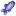
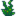
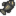

La plage

La Plage se situe au Sud de Pélican Ville. C'est une zone intéressante pour pêcher, car c'est la seule zone où l'on peut trouver des poissons d'eau de mer. De plus, on peut y trouver plusieurs coquillages échoués sur le sable (notamment entre le 12 et le 14 d'été).
Durant l'Été, la Fête Hawaïenne et la Danse des Méduses Clair de Lune sont organisées sur la plage. En Hiver, du 15 au 17, le Marché nocturne s'installe sur l'océan.
Fonctionnalités
Cabane d'Elliott
La Cabane d’Elliott se trouve sur la plage principale, juste à l'Est de l'entrée. Elliott passe la plupart de son temps à l'intérieur, et reste souvent près du feu de camp devant chez lui ou sur les quais à côté de la poissonnerie.
Poissonnerie
La Poissonnerie, tenue par Willy, est localisée sur le ponton principal. Il vend divers articles de pêche et d'aquariums.
Mares résiduelles

Les mares résiduelles se trouvent tout à l'Est de la plage et sont le lieu principal où trouver du corail et des oursins. Au début du jeu, le petit pont de bois y menant en traversant la rivière est détruit. Jusqu'à ce que le pont soit réparé (nécessitant 300 morceaux de bois), les mares résiduelles sont inaccessibles.
Les jours pluvieus et orageux, vous pouvez trouver le Vieux marinier au Nord des mares résiduelles.
Téléportation
Le joueur peut se téléporter à la plage à l'aide d'un Totem de téléportation : Mer (consommé à l'usage) ou d'une Obélisque aquatique (réutilisable). Ces deux méthodes téléportent le joueur au même endroit.
Raccourcis
Après avoir acheté des raccourcis de ville, le côté ouest a un raccourci vers la maison de Leah et la zone nord-est a un raccourci vers la zone au sud du musée.
Cueillette
Tous les objets récupérés sur la plage donnent 7 PE de Cueillette.[1]
Les festivals cachent tous les objets ramassables et lieux d'artéfacts car ils utilisent une version modifiée de la carte de la Plage. Cela se voit particulièrement durant le Marché nocturne : Les objets ramassables et lieux d'artéfacts apparaissent durant la nuit mais sur la carte standard (cachée) de la plage. Après cela (18 Décembre), tous les objets ayant apparus peuvent être ramassés.
Cueillette standard
La plage est une source riche en objets ramassables. Les objets y apparaissent fréquemment et la plupart d'entre eux sont disponibles toute l'année; la Coquille arc-en-ciel et le Coquillage sont les seuls objets spécifiques à une saison:[2]
 Palourde (56% Printemps/Automne, 43% Été, 24% Hiver)
Palourde (56% Printemps/Automne, 43% Été, 24% Hiver) Moule (19% Printemps/Automne, 14% Été, 12% Hiver)
Moule (19% Printemps/Automne, 14% Été, 12% Hiver) Huître (19% Printemps/Automne, 14% Été, 12% Hiver)
Huître (19% Printemps/Automne, 14% Été, 12% Hiver) Coque (6% Printemps/Automne, 5% Été, 3% Hiver)
Coque (6% Printemps/Automne, 5% Été, 3% Hiver)- Qu'en Été:
 Coquille arc-en-ciel (24%)
Coquille arc-en-ciel (24%) - Qu'en Hiver:
 Coquillage (48%)
Coquillage (48%)
Les emplacements où ces objets peuvent apparaissent sont marqués en rouge sur la carte. Les emplacements incluent quasiment tout le sable sec à l'Ouest du pont détruit, et la plupart du sable sec à l'Est. Car 80% des emplacements possibles sont à l'Ouest du pont, les objets auront environ 4 fois plus de chance d'y apparaitre. Le vaste espace disponible sur la plage fait que le taux d'apparition par jour d'objets est très haut : 1,1 par nuit.[3] Cependant, six objets peuvent apparaître à la fois: cette limite inclut les objets des deux côtés du pont, mais n'inclut pas les objets non listés ici (Corail, Oursin ou Algues).
Même si la plupart des objets sur la plage ne sont pas spécifiques à une saison, ils disparaissent tout de même au début de chaque nouvelle saison, de même que le Dimanche matin. Cela inclut tous les objets.[4]
Cueillettes des mares résiduelles
Plusieurs objets spéciaux n'apparaissent que (normalement) dans les mares résiduelles, à l'Est du pont. Ces objets apparaissent séparémenet des autres objets standards, ils ne comptent donc pas dans la limite des six par nuit.
Le  Corail et les
Corail et les  Oursins peuvent apparaitre dans toute la zone des mares (marquée en bleue sur la carte). Il n'y a pas de limite sur le nombre d'objets. La fréquence moyenne d'apparition de tous les objets des mares est de 1,2 objets par nuit;[5] contrairement aux autres objets ramassables standards, cette fréquence n'augmente pas le Dimanche matin ou le premier jour d'une nouvelle saison. 20% de tous les objets des mares seront des Oursins, et 80% seront du Corail. Certains de ces objets peuvent être manqués car ils peuvent apparaitre sur des tuiles légèrement cachées, comme derrière une anémone.
Oursins peuvent apparaitre dans toute la zone des mares (marquée en bleue sur la carte). Il n'y a pas de limite sur le nombre d'objets. La fréquence moyenne d'apparition de tous les objets des mares est de 1,2 objets par nuit;[5] contrairement aux autres objets ramassables standards, cette fréquence n'augmente pas le Dimanche matin ou le premier jour d'une nouvelle saison. 20% de tous les objets des mares seront des Oursins, et 80% seront du Corail. Certains de ces objets peuvent être manqués car ils peuvent apparaitre sur des tuiles légèrement cachées, comme derrière une anémone.
Des  Algues peuvent également apparaitre près des mares résiduelles, mais seulement sur une zone étroite sur le rivage (en vert sur la carte). Il y a 3% de chance par nuit qu'une algue apparaisse.
Algues peuvent également apparaitre près des mares résiduelles, mais seulement sur une zone étroite sur le rivage (en vert sur la carte). Il y a 3% de chance par nuit qu'une algue apparaisse.
Bonus de cueillette d'été
Des objets supplémentaires sont trouvables sur la plage entre le 12 et le 14 d'été. Certains sont des objets ramassables standards car leur fréquence d'apparition est alors légèrement plus élevée qu'à la normale (1,4/nuit au lieu de 1,1/nuit)[6].
De manière plus notable, des Oursins et Coraux supplémentaires apparaissent durant cette période, a une moyenne de 4/nuit (20% Oursins, 80% Coraux).[7] Ils peuvent apparaitre à peu près partout sur la plage (en blanc sur la carte) -- à l'Est et à l'Ouest du pont -- à l'exception des pontons. C'est la seule période de l'année où ces objets peuvent apparaitre à l'Ouest du pont.
Durant ces trois jours, l'océan est plus vert qu'à la normale.[8] En dehors de cela, la carte ne change pas, donc aucun objet placé préalablement sur la plage (Casier à crabes, Coffres...) ne disparait, contrairement à durant les festivals.
Lieux d'artefacts
Les Artefacts pouvant être trouvés en creusant des lieux d'artefacts sur la plage sont :
 Étoile de mer séchée (8%)
Étoile de mer séchée (8%) Bris de verre (7%)
Bris de verre (7%) Trilobite (1.7% + 2.3-5%[9])
Trilobite (1.7% + 2.3-5%[9]) Ancre (4%)
Ancre (4%) Fossile de nautile (1.7%)
Fossile de nautile (1.7%) Éventail décoratif (1.6%)
Éventail décoratif (1.6%) Main squelettique (0.6%)
Main squelettique (0.6%) Fossile de palmier (0.6%)
Fossile de palmier (0.6%).png/24px-Strange_Doll_(green).png) Poupée étrange (vert) (0.06%)
Poupée étrange (vert) (0.06%).png/24px-Strange_Doll_(yellow).png) Poupée étrange (jaune) (0.06%)
Poupée étrange (jaune) (0.06%)
Les autres objets possibles sont:
- 1-3
 Argile (14-30%[9])
Argile (14-30%[9])  Livre perdu (20% + 3-7%[9]); lorsque tous les livres perdus ont été trouvés, chaque livre perdu potentiel est remplacé par
Livre perdu (20% + 3-7%[9]); lorsque tous les livres perdus ont été trouvés, chaque livre perdu potentiel est remplacé par  Mélange de graines.
Mélange de graines.- Qu'en Hiver:
 Racine d'hiver (17%)
Racine d'hiver (17%) - Qu'en Hiver:
 Igname des neiges (11%)
Igname des neiges (11%) - 1-3
 Pierre (5-10%[9])
Pierre (5-10%[9]) - 1-3
 Minerai d'or (2.2-4%[9])
Minerai d'or (2.2-4%[9]) - Une
 Note secrète non lue: jusqu'à 3% de chance, seulement si le joueur possède la Loupe.
Note secrète non lue: jusqu'à 3% de chance, seulement si le joueur possède la Loupe.
Notez que les Germes de riz ne sont pas trouvables sur la plage (pas même dans un coffre au trésor).
Les lieux d'artefacts apparaissent sur la plage a une fréquence de 0,4 par nuit, excepté en Hiver où cette moyenne monte à 0,5 par nuit.[10]
Pêche

La plage est le seul endroit où vous pouvez attraper des poissons d'eau de mer dans un casier à crabes. Toute l'eau de la plage est considérée comme eau de mer, même la fin de la rivière au dessus de laquelle passe le pont. Par conséquent, vous obtiendrez les mêmes poissons partout sur la plage (à l'exception du Poisson écarlate, l'un des cinq poissons légendaires, qui ne peut être pêché qu'à l'extrême Est de la plage).
Visuellement, les pontons semblent permettre un meilleur accès à l'eau profonde. Cependant, les pontons sont considérés comme la terre en terme de mécanique de pêche. Il n'y a donc pas de différence en pêchant sur la terre ferme ou sur les pontons. Similairement, l'eau turquoise (semblent peu profonde) ne change rien à la mécanique de pêche.
Les bulles semblent apparaître plus fréquemment à la plage que dans n'importe quel autre emplacement car une grande partie de la carte est recouverte d'eau[11]. Cependant, elles apparaissent fréquemment au large, ce qui les rend parfois inatteignables.
Durant le marché nocturne, seulement des déchets peuvent être pêchés à la plage; la pêche est possible mais seulement dans le sous-marin de pêche, avec une liste spéciale de poisson disponible.
| Heure | |||||||||||||||||||||
|---|---|---|---|---|---|---|---|---|---|---|---|---|---|---|---|---|---|---|---|---|---|
| 06 | 07 | 08 | 09 | 10 | 11 | 12 | 13 | 14 | 15 | 16 | 17 | 18 | 19 | 20 | 21 | 22 | 23 | 00 | 01 | ||
|  Hareng | |||||||||||||||||||||
|  Algues | |||||||||||||||||||||
|  Flétan | |||||||||||||||||||||
| Jour de pluie seulement | |||||||||||||||||||||
| 06 | 07 | 08 | 09 | 10 | 11 | 12 | 13 | 14 | 15 | 16 | 17 | 18 | 19 | 20 | 21 | 22 | 23 | 00 | 01 | ||
| Jour de pluie seulement | |||||||||||||||||||||
| Algues | |||||||||||||||||||||
| Flétan | |||||||||||||||||||||
| Jour de soleil seulement | |||||||||||||||||||||
| 06 | 07 | 08 | 09 | 10 | 11 | 12 | 13 | 14 | 15 | 16 | 17 | 18 | 19 | 20 | 21 | 22 | 23 | 00 | 01 | ||
| Jour de pluie seulement | |||||||||||||||||||||
| Algues | |||||||||||||||||||||
| Jour de pluie seulement | |||||||||||||||||||||
| 06 | 07 | 08 | 09 | 10 | 11 | 12 | 13 | 14 | 15 | 16 | 17 | 18 | 19 | 20 | 21 | 22 | 23 | 00 | 01 | ||
| Hareng | |||||||||||||||||||||
| Jour de pluie seulement | |||||||||||||||||||||
| Algues | |||||||||||||||||||||
| Flétan | |||||||||||||||||||||
Notes
- Le pont détruit à l'Est de la plage n'est pas le pont vers la carrière (qui, lui, est réparable en complétant le paquet Salle d’artisanat dans le Centre communautaire).
- Occasionnellement, le monstre de la mer fera apparition dans l'océan, sous le ponton.
- Tamiser est impossible à la plage, sauf durant le marché nocturne.[12]
Anecdotes
- Au Nord-Ouest de la plage se trouve une entrée suspecte entre deux arbres. Cependant, ce passage est bloqué par un amas de planches.
- Même si l'eau de mer est considérée comme dangereuse pour beaucoup de végétaux, vous pouvez remplir votre arrosoir dans l'océan et l'utiliser sur vos récoltes.
Secrets
Références
- ↑ L'expérience est donnée par GameLocation::checkAction, basée en partie selon s'il s'agit d'un objet Object.isForage. Même si les coquillages et poissons ne sont pas normalement qualifiés comme ramassables, Object.isForage permet explicitement à tous les objets trouvés sur la plage d'être considérés comme ramassés.
- ↑ Pour chaque objet ramassable, le pourcentage fourni est le pourcentage moyen de tous les objets ramassables standards qui seront des objets spécifiés pour cette saison. La donnée est Locations.xnb, procédée par le code dans GameLocation::spawnObjects.
- ↑ Sur le total des 5200 tuiles de la plage, 647 (12%) sont des emplacements valides d'apparition d'objets ramassables. 133 de ces emplacements sont à l'Est du pont. Pour plus d'information sur l'apparition d'objets ramassables, voir Cueillette.
- ↑ Voir le code du jeu dans Beach::DayUpdate. Notez que tous les objets bonus sont crées selon GameLocation::dropObject, leur donnant le label isSpawnedObject , les faisant se détruire automatiquement à la fin d'une semaine/saison.
- ↑ Le code du jeu faisant apparaitre les objets des mares résiduelles est dans Beach::DayUpdate. Le Corail et les Oursins sont crées dans une boucle qui commence avec une chance de 100%, puis se répète indéfiniment, multipliant la chance par 0,5 à chaque fois, jusqu'à ce qu'on test échoue. La fréquence d'apparition réelle est réduite légèrement par les emplacements valides: le code sélectionne aléatoirement parmi les 300 tuiles, mais seulement 212 des tuiles sont des emplacements valides. Les algues sont crées dans une seconde boucle où la chance pour une première algue d'apparaitre est de 0,025 (0.25x0.1), mais plusieurs boucles sont possibles. La sélection de l'emplacement n'altère pas la chance d'apparition, car tous les 17 emplacements possibles pour les algues sont valides.
- ↑ Durant les 12 à 14 d'été, GameLocation::spawnObjects est activé six fois au lieu d'une: Beach::DayUpdate l'active cinq fois de plus que l'appel normal fait par GameLocation::DayUpdate. Cependant, les activations supplémentaires à spawnObjects sont largement inefficaces, car les mêmes emplacements sont testés à chaque fois -- la graine de nombre aléatoire (basée sur l'ID du jeu et les jours joués) est toujours la même.
- ↑ Durant les 12 à 14 d'été, les oursins et coraux supplémentaires ont 1239 emplacements valides sur les 2600 qui peuvent être aléatoirement séléctionnés.
- ↑ Beach::resetSharedState change la couleur de l'eau, ajoutant un masque vert, seulement les 12 à 14 d'été.
- ↑ 9,0 9,1 9,2 9,3 et 9,4 La chance de trouver un boejt supplémentaire dans un lieu d'artefacts selon la saison: la chance est 50% plus petite en Hiver. Voir Lieu d'artefacts pour plus d'informations.
- ↑ Sur le total des 5200 tuiles de la plage, 777 sont des emplacements valides d'apparition pour les lieux d'artefacts toute l'année. Voir Lieu d'artefacts pour plus d'informations.
- ↑ La chance brute d'apparition de bulles à la plage est la même que sur les autres cartes, voir GameLocation::performTenMinuteUpdate, concernant spécifiquement fishSplashPoint. Cependant, le code sélectionne aléatoirement n'importe quelle tuile de la carte et crée des bulles si cette tuile semble apte à la "pêche". Avec 2307 sur 5200 tuiles aptes (44%), la plage a une fraction plus haute que les autres cartes.
- ↑ Le code dans GameLocation::performTenMinuteUpdate qui fait apparaitre orePanPoints est passée sur la plage, mais le test ne reconnait pas la carte BeachNightMarket.
Historique
- 1.4 : Ajout de l'apparition d'algues ramassables. Il n'est plus possible de placer des objets sur la plage durant le marché nocturne.
| Emplacements | |
|---|---|
| Emplacements | Arrêt de bus • Carrière • Caverne du Crâne • Cimetière • Désert de Calico • Donjon du volcan • Égouts • Étang de ferme • Ferme • Forêt inexploitée • Forêt secrète • Forêt Sève-Cendreuse • Grotte de ferme • Grotte de maîtrise • Île Gingembre • Marais de la sorcière • Mine de la carrière • Mines • Montagne • Pélican Ville • Plage • Repaire des insectes mutants • Sommet • Tunnel • Voie ferrée • Wagonnet |